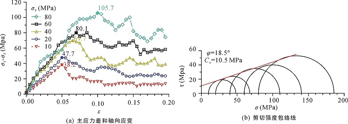
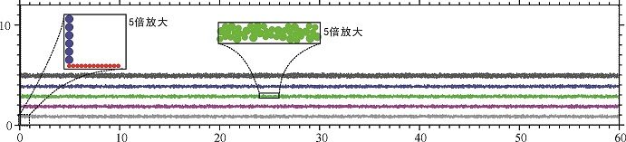
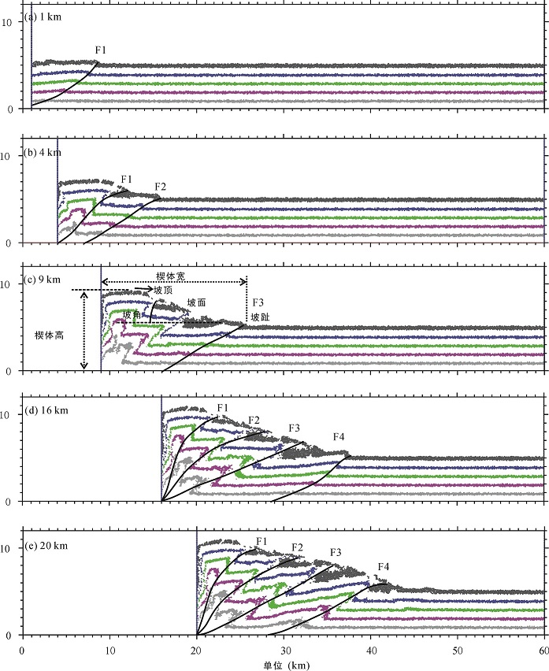
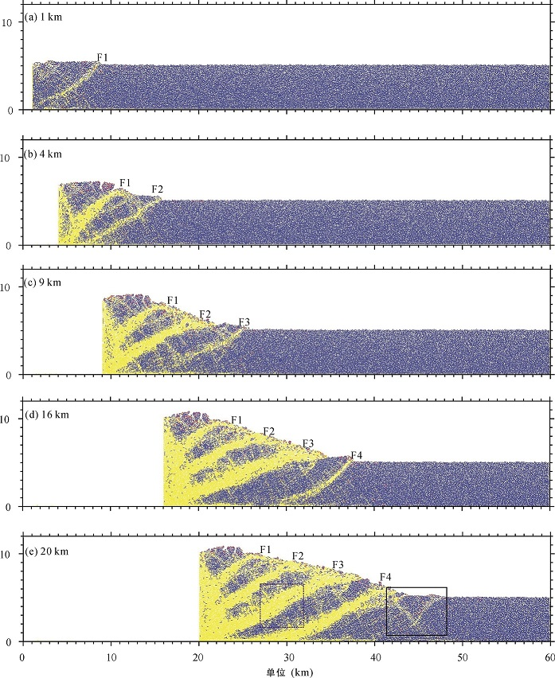
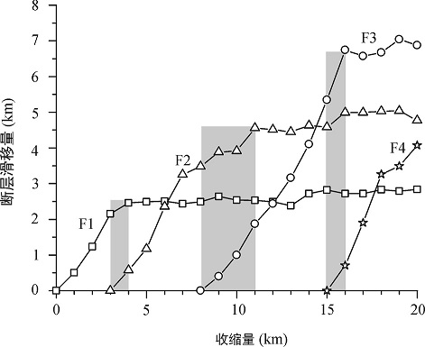
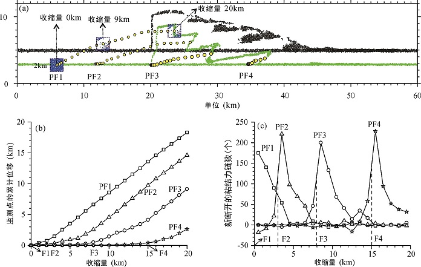
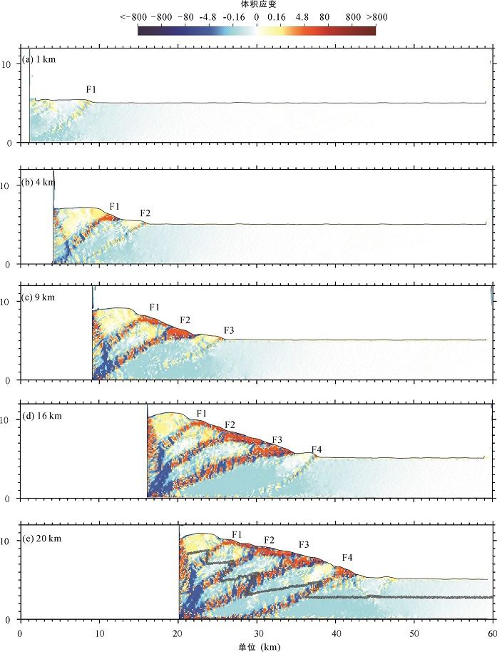
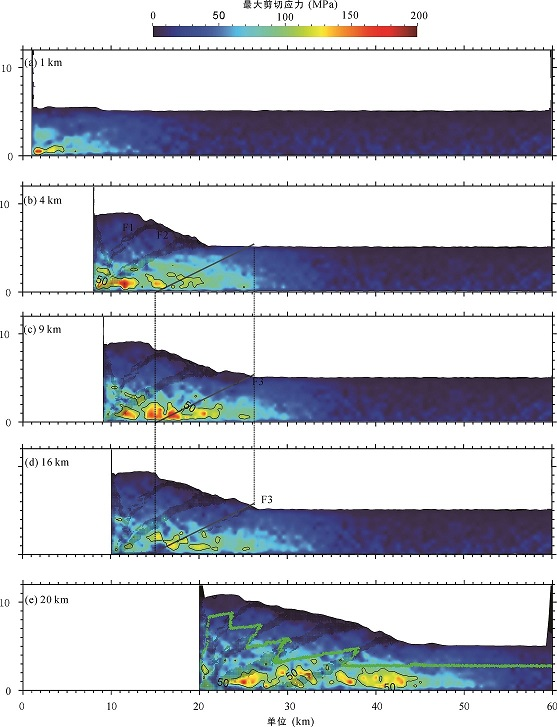

下载：
离散元方法在构造变形、应力应变与裂缝预测定量研究中具有巨大潜力, 是未来的构造变形定量研究的主要方向之一。
题目
基于离散元的挤压构造定量分析与模拟
作者
李长圣1,2,3,4, 尹宏伟3*, 徐雯峤3, 吴珍云1, 2, 管树巍4, 贾东3, 任荣4
- 东华理工大学 核资源与环境国家重点实验室, 江西 南昌 330013;
- 东华理工大学 地球科学学院, 江西 南昌 330013;
- 南京大学 地球科学与工程学院, 江苏 南京 210023;
- 中国石油勘探开发研究院, 北京 100083
摘要
随着离散元理论和计算机技术的发展, 离散元方法已经广泛应用到不同尺度的构造模拟中。相较于传统的沙箱模拟实验, 离散元可以更精确地控制实验的边界条件, 定量的分析构造变形过程, 有助于从细观尺度深入认识地层力学性质对构造变形过程的影响。本文系统阐述了基于离散元的构造变形定量分析方法, 结合一个典型的挤压构造离散元数值模拟试验, 模拟了水平挤压环境下构造的形成过程, 并对变形过程中的应力、应变分布变化与裂缝生成规律进行了分析, 取得以下认识：(1) 该模拟实验的构造以前展式的逆冲叠瓦断层为主, 断层从挤压端到远离挤压端依次活动; (2) 裂缝与断层形成有密切关系, 局部区域内聚集的大量裂缝是产生断层的诱因; (3) 断层形成初期, 断层内物质运动距离较小, 产生裂缝增量最多; 断层活动后期, 裂缝增量减少; (4) 体积应变可以表征裂缝类型(拉张或压缩), 变形应变可以区分正向和反向逆冲断层; (5) 平均应力大小与地形起伏呈正相关关系, 最大剪切应力持续在将要形成的新断层处累积, 直至该新断层形成, 最大剪切应力继而消散, 继续往前传播, 在下一个将要形成的新断层处累积。研究结果表明离散元方法在构造变形、应力应变与裂缝预测定量研究中具有巨大潜力。

图2 双轴实验结果

图3 初始模型

图 4 模型收缩量为1 km (a)、4 km (b)、9 km (c)、16 km (d)、20 km (e)时楔体的构造解释

图 6 收缩量 1 km (a), 4 km (b), 9 km (c), 16 km (d), 20 km (e)时, 粘结力链分布(蓝色为粘结力链, 黄色为无粘结的接触)

图8 断层的滑移曲线随收缩量的变化(断层F1、 F2、 F3和F4见图 4, 断层滑移值选取绿色层测量)

图9 点PF1、PF2、PF3和PF4的运动路径(a), 随着模型收缩, 点PF1、PF2、PF3和PF4累计位移量(b), 点PF1、PF2、PF3和PF4的周围1 km范围内, 模型每收缩1 km, 新断开的粘结力链数(c)

图10 收缩量为1 km (a)、4 km (b)、9 km (c)、16 km (d)、20 km (e)时, 模型内的累积体积应变

图15 收缩量为1 km (a)、4 km (b)、9 km (c)、16 km (d)、20 km (e)时, 最大剪切应力分布
致谢
本文的数值计算是在南京大学高性能计算中心的计算集群上完成的, 数值模拟实验使用课题组自主研发的离散元数值模拟软件完成, 更多构造模拟示例见https://geovbox.com。文中采用的应变计算代码, 修改自莱斯大学Julia K. Morgan和Thomas Fournier的脚本, 在此表示感谢。楔体要素测量程序源码见 https://github.com/demsheng/Quantitative-wedge 。中国石油大学(北京)余一欣副教授和刘志娜副教授对本文进行了认真而专业的审阅, 提出了建设性修改建议, 在此一并致以特别感谢。
ZDEM脚本代码
沉积过程。gen.py 中内容如下：
###################################### # title: 基于离散元的挤压构造定量分析与模拟:1 沉积 # date: 2022-09-01 # authors: 李长圣 # E-mail: sheng0619@163.com # ref: [李长圣,尹宏伟,徐雯峤,吴珍云,管树巍,贾 东,任 荣.基于离散元的挤压构造定量分析与模拟[J].大地构造与成矿学,2022,(46卷04):645-661.](https://doi.org/10.16539/j.ddgzyckx.2022.04.001) # more info, see www.geovbox.com ####################################### start set disk 0 BOX left 0.1 right 62000.0 bottom 1.0 height 20000.0 kn=4e10 ks=4e10 fric 0.00 GLINE P1 ( 1000.0 , 1000.0 ) P2 ( 61200.0 , 1000.0 ) r 40.0 GROUP bom_wall GLINE P1 ( 1000.0 , 1120.0 ) P2 ( 1000.0 , 19000.0 ) r 80.0 GROUP lef_wall GLINE P1 ( 61000.0 , 1120.0 ) P2 ( 61000.0 , 19000.0 ) r 80.0 GROUP rig_wall GEN num 200000, rad discrete 60.0 80.0, x ( 1000 61000), y (1000 16000), COLOR black PROP den 2.5e3, fric 0.0, shear 2.9e9, poiss 0.2, damp 0.4 hertz prop color blue range group bom_wall prop color black range group lef_wall prop color black range group rig_wall fix x y spin range group bom_wall fix x y spin range group lef_wall fix x y spin range group rig_wall SET DT 5e-2, GRAVITY ( 0.0, -9.8 ) PROP damp 0.4 DRAW INTERVAL 1000, bfill wall bondc ;,bid,bang mesh, cforce SET stepbar 1000 SET save 50000 set print 1000 set ps 1000 CYC 5000 del range x 1001 60999 y 7000 99999 CYC 5000 exp init6km_xyr.dat range x 1001.0 60999.0 y 1001.0 99999.0 del range x 1001 60999 y 6000 99999 CYC 5000 exp init5km_xyr.dat range x 1001.0 60999.0 y 1001.0 99999.0 stop挤压过程。push.py 中内容如下：
沉积过程，随机生成颗粒，可能导致初始模型与文章中有差异，下载文章中初始模型：init5km_xyr.dat
###################################### # title: 基于离散元的挤压构造定量分析与模拟:2 挤压 # date: 2022-09-01 # authors: 李长圣 # E-mail: sheng0619@163.com # ref: [李长圣,尹宏伟,徐雯峤,吴珍云,管树巍,贾 东,任 荣.基于离散元的挤压构造定量分析与模拟[J].大地构造与成矿学,2022,(46卷04):645-661.](https://doi.org/10.16539/j.ddgzyckx.2022.04.001) # more info, see www.geovbox.com ####################################### load init5km_xyr.dat set disk 0 BOX left 0.1 right 62000.0 bottom 1.0 height 20000.0 kn=4e10 ks=4e10 fric 0.00 GLINE P1 ( 1000.0 , 1000.0 ) P2 ( 61200.0 , 1000.0 ) r 40.0 GROUP bom_wall GLINE P1 ( 1000.0 , 1120.0 ) P2 ( 1000.0 , 19000.0 ) r 80.0 GROUP lef_wall GLINE P1 ( 61000.0 , 1120.0 ) P2 ( 61000.0 , 19000.0 ) r 80.0 GROUP rig_wall PROP color white den 2.5e3, fric 0.0, shear 2.9e9, poiss 0.2, hertz prop color blue range group bom_wall prop color black range group lef_wall prop color black range group rig_wall fix x y spin range group bom_wall fix x y spin range group lef_wall fix x y spin range group rig_wall SET DT 5e-2, GRAVITY ( 0.0, -9.8 ) PROP damp 0.4 SET stepbar 1000 set print 5000 set ps 5000 prop ebmod 2e8 gbmod 2e8 tstrength 1e7 sstrength 2e7 fric 0.3 range x 1001.0 60999.0 y 1001.0 9000.0 prop color mg range x 1001.0 60999.0 y 1700.0 2000.0 prop color violet range x 1001.0 60999.0 y 2700.0 3000.0 prop color green range x 1001.0 60999.0 y 3700.0 4000.0 prop color blue range x 1001.0 60999.0 y 4700.0 5000.0 prop color black range x 1001.0 60999.0 y 5700.0 9000.0 prop color blue fric 0.3 range group lef_wall prop color blue fric 0.3 range group rig_wall prop color red fric 0.3 range group bom_wall ini xv 2.0, range group lef_wall wall id 1, nodes ( 500.0 , 2000.0 ) ( 500.0 , 3000.0 ), kn=0e3 ks=0e3 color black fric 0.0 xv 2.0 imple wall id 1 xmove 20000 print 1000.0 ps 1000.0 vtk 1000.0 sav 2000.0 stop